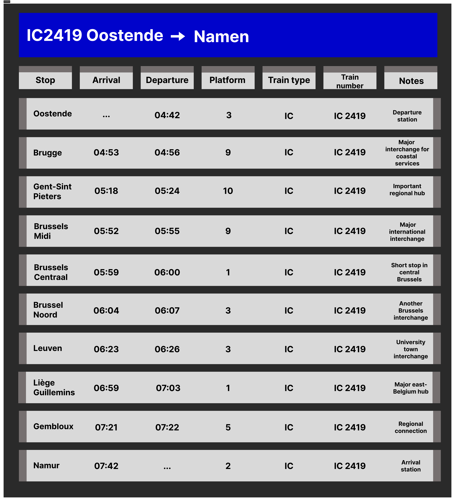

<!DOCTYPE tailwind>
<tailwind lang="en">
<head>
  <meta charset="UTF-8" />
  <meta name="viewport" content="width=device-width, initial-scale=1.0" />
  <title>Project Documentatie Tailwind</title>

  <script src="https://cdn.tailwindcss.com"></script>
  <link href="https://fonts.googleapis.com/css2?family=JetBrains+Mono:wght@300;400;700&display=swap" rel="stylesheet" />

  <style>
    body { font-family: "JetBrains Mono", monospace; }

    @keyframes blink { from { border-color: transparent } to { border-color: #000000 } }

    .typewriter { overflow: hidden; white-space: nowrap; border-right: 3px solid #000000; }
    .cursor-blink { animation: blink 0.6s step-end infinite alternate; }
  </style>
</head>

<body class="bg-black text-white m-0">
 
  <nav class="bg-[#cfff04] rounded-[40px] m-4 px-10 py-4 flex justify-between items-center">
    <div class="text-[22px] font-bold"></div>

    <div class="flex gap-10 items-center">
      <a href="index.html" class="px-7 py-3 font-bold text-[15px] bg-black text-white border-2 border-black rounded-full shadow-[0_6px_0_#1b1b1b] active:translate-y-1 active:shadow-[0_2px_0_#aed403] transition">STARTPAGINA</a>

      
      <div class="relative group">
        <button class="px-7 py-3 font-bold text-[15px] bg-black text-white border-2 border-black rounded-full shadow-[0_6px_0_#1b1b1b]">WEKEN</button>

        <div class="hidden group-hover:flex absolute top-full left-1/2 -translate-x-1/2 flex-col gap-3 p-4 w-[100px] rounded-[30px] bg-transparent z-20">
          <a href="Week 1.html" class="text-center font-bold bg-white text-black rounded-full border-2 border-white shadow-[0_4px_0_#dadada] py-1">1</a>
          <a href="Week 2.html" class="text-center font-bold bg-white text-black rounded-full border-2 border-white shadow-[0_4px_0_#dadada] py-1">2</a>
          <a href="Week 3.html" class="text-center font-bold bg-white text-black rounded-full border-2 border-white shadow-[0_4px_0_#dadada] py-1">3</a>
          <a href="Week 4.html" class="text-center font-bold bg-white text-black rounded-full border-2 border-white shadow-[0_4px_0_#dadada] py-1">4</a>
          <a href="Week 5.html" class="text-center font-bold bg-white text-black rounded-full border-2 border-white shadow-[0_4px_0_#dadada] py-1">5</a>
          <a href="Week 6.html" class="text-center font-bold bg-white text-black rounded-full border-2 border-white shadow-[0_4px_0_#dadada] py-1">6</a>
          <a href="Week 7.html" class="text-center font-bold bg-white text-black rounded-full border-2 border-white shadow-[0_4px_0_#dadada] py-1">7</a>
          <a href="Week 8.html" class="text-center font-bold bg-white text-black rounded-full border-2 border-white shadow-[0_4px_0_#dadada] py-1">8</a>
        </div>
      </div>

    </div>
  </nav>

  
  <div class="max-w-[900px] mx-auto mt-12 p-5 leading-relaxed">

    <h1 class="typewriter text-[90px] font-extrabold" data-text="WEEK 3"></h1>
    <h2 class="typewriter text-[#cfff04] text-2xl font-extrabold" data-text="EERSTE DIGITALE PROTOTYPES IN FIGMA"></h2>

    
    <div class="flex flex-col md:flex-row gap-8 mt-6">

      <div class="flex-1">
        <p>
          In de derde week begon de fase waar ik het meest naar had uitgekeken: het digitaliseren van mijn schetsen in Figma. Ik startte met het opzetten van de juiste schermformaten en plaatste de belangrijkste elementen die ik op papier had getekend digitaal na. Al snel merkte ik dat sommige dingen die op papier logisch leken, digitaal minder goed werkten. Daardoor begon ik meteen aanpassingen te maken en elementen opnieuw te positioneren. Figma maakte me ook veel bewuster van spacing, uitlijning en consistentie. Ik gebruikte de grids en hulpmiddelen die Figma biedt, waardoor het ontwerp steeds strakker werd.
        </p>
        <p class="mt-4">
          Na het overzetten van de structuur begon ik te experimenteren met kleur en stijl. In het begin koos ik heel veilige, neutrale kleuren, omdat ik wilde voorkomen dat het ontwerp te druk zou worden. Maar naarmate ik langer bezig was, begon ik ook andere kleuren uit te proberen. Ik testte lichte pastelkleuren, donkerdere tinten en zelfs fellere combinaties. Daarnaast probeerde ik verschillende iconen, schaduwen en afgeronde hoeken om te kijken wat het beste bij de app zou passen. Sommige experimenten werkten totaal niet, maar juist daardoor kreeg ik een beter gevoel voor wat ik wél wilde.
        </p>
      </div>

      <div class="flex-1">
        <p>
          Toen de basis stond, richtte ik me op de consistentie. Het viel me op dat sommige knoppen net iets anders waren, of dat marges op één scherm ruimer waren dan op een ander. Ik besloot daarom een kleine set richtlijnen voor mezelf te maken, zodat ik steeds dezelfde keuzes kon blijven maken. Dit zorgde ervoor dat het ontwerp uiteindelijk rustiger en veel professioneler begon aan te voelen.
        </p>
      </div>
    </div>

    
    <div class="mt-16">
      <h2 class="typewriter text-[#cfff04] text-2xl font-extrabold" data-text="EERSTE REEKS FIGMA SCHETSEN"></h2>
      <h2 class="typewriter text-[#fffff] text-1xl font-regular" data-text="persoonlijk vindt ik deze echt heel lelijk ._."></h2>

      <div class="flex flex-col md:flex-row flex-wrap gap-6">
        
        <div class="relative w-full md:w-[48%] overflow-hidden rounded-[20px] cursor-pointer group">
          <div class="absolute inset-0 bg-[#cfff04] z-20 transition-opacity duration-500 group-hover:opacity-0"></div>
          <div class="absolute inset-0 flex items-center justify-center text-black font-bold text-[40px] z-30 transition-opacity duration-500 group-hover:opacity-0">VERTREKBORD</div>
          
        </div>

        
        <div class="relative w-full md:w-[48%] overflow-hidden rounded-[20px] cursor-pointer group">
          <div class="absolute inset-0 bg-[#cfff04] z-20 transition-opacity duration-500 group-hover:opacity-0"></div>
          <div class="absolute inset-0 flex items-center justify-center text-black font-bold text-[35px] z-30 transition-opacity duration-500 group-hover:opacity-0">PERRONSCHERM</div>
          
        </div>

        
        <div class="relative w-full md:w-[48%] overflow-hidden rounded-[20px] cursor-pointer group">
          <div class="absolute inset-0 bg-[#cfff04] z-20 transition-opacity duration-500 group-hover:opacity-0"></div>
          <div class="absolute inset-0 flex items-center justify-center text-black font-bold text-[35px] z-30 transition-opacity duration-500 group-hover:opacity-0">WEGWIJSSCHERM</div>
          
        </div>
      </div>
    </div>

  </div>

  
  <script>
    function typeWriter(element, text, speed = 100) {
      let i = 0;
      element.classList.add('cursor-blink');

      function typing() {
        if (i < text.length) {
          element.textContent += text.charAt(i);
          i++;
          setTimeout(typing, speed);
        }
      }
      typing();
    }

    
    const observer = new IntersectionObserver((entries, observer) => {
      entries.forEach(entry => {
        if (entry.isIntersecting) {
          const el = entry.target;
          if (!el.dataset.typed) { 
            typeWriter(el, el.getAttribute('data-text'));
            el.dataset.typed = "true";
          }
          observer.unobserve(el);
        }
      });
    }, { threshold: 0.5 });

    
    document.querySelectorAll('.typewriter[data-text]').forEach(el => observer.observe(el));
  </script>

</body>
</html>
